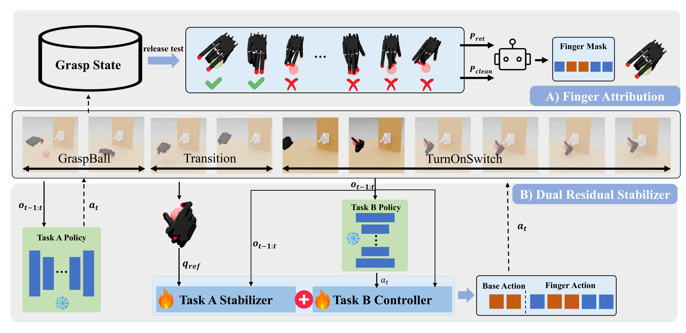

Retention
Abstract
Dexterous manipulation policies can solve individual skills, but composing them to perform multiple tasks with a single hand remains difficult. Different tasks often compete over the same action dimensions, causing destructive interference between preserving an existing manipulation outcome and executing a new one. We propose DexCompose, a role-aware residual composition framework that enables the reuse of pretrained dexterous policies through explicit finger-level action ownership.
Given two pretrained full-hand policies, DexCompose first collects successful post-task states from the first skill and performs release tests over candidate finger masks to estimate which fingers are necessary for maintaining the established held state. It then trains a bounded residual stabilizer for task preservation and a context-aware residual that adapts the frozen downstream policy only within the action subspace assigned to the new task.
We evaluate the framework on 16 composite dexterous manipulation tasks spanning four object-retention skills and four downstream interactions. Our method achieves 77.4% average composite success, and ablation studies confirm that structural action ownership combined with dual asymmetric residuals is more effective than conventional policy chaining or unmasked residual correction.
Method
DexCompose treats policy composition as an action allocation problem at the embodiment level. The framework discovers which fingers must preserve Task A, releases redundant fingers for Task B, and composes the two frozen policies using residual modules that are restricted to their assigned action subspaces.

Finger Attribution
Successful Task-A hold states are replayed while candidate finger subsets are released. Retention and clean-release diagnostics identify which fingers can be reassigned without losing the held object.
Action Ownership
The selected finger mask defines disjoint action subspaces: Task A controls preserved fingers, while Task B controls the wrist and released fingers.
Dual Residual Stabilizer
A bounded Task-A residual preserves the held state, and a Task-B residual adapts the downstream policy under the constraints imposed by the maintained grasp.
Video Demos
Demos are grouped by the behavior they illustrate: competent single-task base policies, release-test diagnostics for finger ownership, successful composite rollouts across all task pairs, and representative failure or ablation cases.
Primitive Skills
Base Policy Primitives
The primitive policies solve their own tasks before composition, so the challenge is controlled reuse under one shared hand action space.
Retention
PickStick
Retention
PickCan
Retention
PourMug
Downstream
OpenDoor
Downstream
PushButton
Downstream
OpenMicrowave
Downstream
TurnOnSwitch
Finger Ownership
Release-Test Diagnostics
Each row compares one successful release mask with three failure cases for the same retained skill, illustrating how DexCompose chooses fingers that preserve the held object while freeing useful dexterity.
Task A
GraspBall
Success
Failure 1
Failure 2
Failure 3
Task A
PickStick
Success
Failure 1
Failure 2
Failure 3
Task A
PickCan
Success
Failure 1
Failure 2
Failure 3
Task A
PourMug
Success
Failure 1
Failure 2
Failure 3
Composed Behaviors
Composite Success Grid
DexCompose preserves the retained skill while assigning the wrist and released fingers to downstream interaction across four retained skills and four downstream tasks.
Retained Skill
OpenDoor
PushButton
OpenMicrowave
TurnOnSwitch
PickStick
PickStick + OpenDoor
PickStick + PushButton
PickStick + OpenMicrowave
PickStick + TurnOnSwitch
PourCan
PourCan + OpenDoor
PourCan + PushButton
PourCan + OpenMicrowave
PourCan + TurnOnSwitch
PourMug
PourMug + OpenDoor
PourMug + PushButton
PourMug + OpenMicrowave
PourMug + TurnOnSwitch
Relocate
Relocate + OpenDoor
Relocate + PushButton
Relocate + OpenMicrowave
Relocate + TurnOnSwitch
Comparison Cases
Baseline and Ablation Failure Cases
Direct chaining and missing residual components expose the main failure modes: weak downstream contact, unstable transitions, or loss of the retained object.
Frozen Grasp
Failure Case 1
Frozen Grasp
Failure Case 2
Frozen Grasp
Failure Case 3
Frozen Grasp
Failure Case 4
Ablation
No Task-A Residual
Ablation
No Task-B Residual
Results
16
Composite Tasks
77.4%
Mean Success
+15.8 pp
Over Strongest Baseline
32 x 8
Rollouts per Pair
Experiments are conducted in Isaac Lab with a Shadow Hand. Task A contains four object-retention skills: GraspBall, PourMug, PickCan, and PickStick. Task B contains four downstream interactions: OpenDoor, PushButton, OpenMicrowave, and TurnOnSwitch. A rollout succeeds only when the Task-A object remains retained and Task B is completed.
| Method | Mean Composite Success | Role in Comparison |
|---|---|---|
| Frozen Grasp | 3.09 +/- 0.72 | Sequential execution with frozen grasp-maintaining fingers |
| Decomposed Action Space | 45.61 +/- 1.94 | Fixed subspace split without release-test validation |
| Residual Learning | 61.60 +/- 2.31 | Unmasked residual correction over the combined policy |
| Ours-ZS | 69.23 +/- 1.60 | Finger allocation and Task-A stabilizer without Task-B residual |
| DexCompose | 77.43 +/- 2.64 | Finger attribution, action ownership, and dual residual stabilization |

Ablations and Diagnostics
Component ablations show that the Task-A residual is essential for preserving the first manipulation outcome. Finger allocation and action masking reduce cross-task interference, while the Task-B residual and transition stage further improve execution robustness.
| Variant | Mean Success | Interpretation |
|---|---|---|
| DexCompose | 77.43 +/- 2.64 | Full method |
| Ours-ZS | 69.23 +/- 1.60 | Removes Task-B residual |
| -Finger | 54.52 +/- 2.09 | Removes finger allocation |
| -Task-A | 9.13 +/- 1.29 | Removes Task-A residual stabilizer |
| -Mask | 59.13 +/- 1.75 | Removes action masking |
| -Trans. | 69.02 +/- 2.07 | Removes transition stage |

BibTeX
@misc{dexcompose2026,
title={DexCompose: Reusing Dexterous Policies for Multi-Task Manipulation with a Single Hand},
author={Anonymous Authors},
year={2026},
note={Manuscript under review}
}